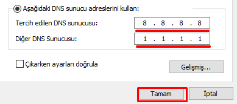
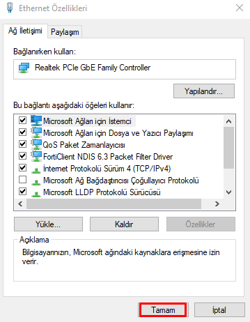

Windows Üzerinde DNS Değiştirme
Windows bilgisayarınızda DNS ayarlarını değiştirmek için aşağıdaki adımları izleyebilirsiniz:
- Başlat menüsünden Denetim Masasını açın.

- Ağ ve Paylaşım Merkezine gidin.

- Sol tarafta bulunan Bağdaştırıcı ayarlarını değiştir seçeneğine tıklayın.

- DNS ayarlarını değiştirmek istediğiniz bağlantıya sağ tıklayıp Özellikleri seçin.

- İnternet Protokolü Sürüm 4 (TCP/IPv4)ü seçip Özellikler butonuna tıklayın.

- Açılan pencerede Aşağıdaki DNS sunucu adreslerini kullanı seçin.

- Tercih edilen ve alternatif DNS adreslerinizi girin. Önerilen DNS adresleri:
- Tercih edilen DNS sunucusu: 1.1.1.1 (Cloudflare DNS)
- Alternatif DNS sunucusu: 8.8.8.8 (Google DNS)
 - Son olarak Tamam butonuna tıklayın ve değişikliklerinizi kaydedin.

Not: DNS değişikliğinizin etkili olması için internet bağlantınızı yeniden başlatmanız gerekebilir.